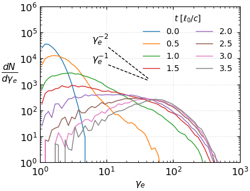

Electron-Ion Simulation Analysis
This page contains key figures and datasets used in our study of electron-ion simulation. The simulation parameters are as follows:
(a) Resolution = \( 512^3 \); skin depth resolved by \(\hat{d}_e=3\) cells, courant number \(\hat{c}=0.45\)
(b) \( \theta = kT/m_ec^2 = 0.3\) and \(T_i/T_e =1.0\). The mass ratio is taken to be \( m_i/m_e = 10\)
(c) Driving scale \( = \ell_0 = 512/1 = 512\) ; Eddie turnover time \(\ell_0/c=512/0.45\)
Section 1: Particle Energy Spectrum

Figure 1: Electron spectrum
Figure 2: Proton spectrum
Section 2: Magnetic and kinetic energy energy spectrum (using \(\bar{v}_e\))

Figure 3: Magnetic energy spectrum
Figure 4: Kinetic energy spectrum
Section 3: Sample particles (ion)
Section 4: Sample particles (electron)
Section 5: Magnetic field distribution, \(|b| = \sqrt{b_x^2 + b_y^2 + b_z^2}/b_0\)
Figure 5: PDFs of \(b\) over the box grid measured at different times.
Figure 6(a): \(t=1.0\ell_0/c\)
Figure 6(b): \(t=2.0\ell_0/c\)
Figure 6(c): \(t=3.0\ell_0/c\)
Section 6: Current density distribution, \(|j| = \sqrt{j_x^2 + j_y^2 + j_z^2}/n_0q_ec\)

Figure 13: PDFs of \(j\) over the box grid measured at different times.
Figure 7(a): \(t=1.0\ell_0/c\)
Figure 7(b): \(t=2.0\ell_0/c\)
Figure 7(c): \(t=3.0\ell_0/c\)
Section 7: Statistical correlation for TTD (electrons)
All particles tracked in the simulation are selected.
(1) \(\Gamma_d<2\)
(2) \(p^\prime_\parallel>p^\prime_\perp\)
(3) \(\Delta t\geq 0.2\ell_0/c\)
Subsec. 7A: TTD - End point of simulation: \(t_{\rm end}=2.5\ell_0/c\)

Figure 8(a)
Subsec. 7B: End point of simulation: \(t_{\rm end}=3.5\ell_0/c\)

Figure 9(b)
Section 8: Statistical correlation for mirror acceleration (electrons), \(\gamma_e>\)200
(1) \(\Gamma_d<2\)
(2) \(\gamma_e>\)200 at \(t=t_{\rm end}\)
(3) \(\Delta t\geq 0.3\ell_0/c\)
Case A: End point of simulation: \(t_{\rm end}=1.8\ell_0/c\)
# particles found: 1444
Case B: End point of simulation: \(t_{\rm end}=2.0\ell_0/c\)
# particles found: 1461
Case C: End point of simulation: \(t_{\rm end}=2.2\ell_0/c\)
# particles found: 1600
Case D: End point of simulation: \(t_{\rm end}=2.5\ell_0/c\)
# particles found: 2074
Case E: End point of simulation: \(t_{\rm end}=2.8\ell_0/c\)
# particles found: 2383
Section 9: Statistical correlation for mirror acceleration (electrons), \(\gamma_e>\)250
(1) \(\Gamma_d<2\)
(2) \(\gamma_e>\)250 at \(t=t_{\rm end}\)
(3) \(\Delta t\geq 0.3\ell_0/c\)
Case A: End point of simulation: \(t_{\rm end}=1.8\ell_0/c\)
# particles found: 729
Case B: End point of simulation: \(t_{\rm end}=2.0\ell_0/c\)
# particles found: 730
Case C: End point of simulation: \(t_{\rm end}=2.2\ell_0/c\)
# particles found: 813
Case D: End point of simulation: \(t_{\rm end}=2.5\ell_0/c\)
# particles found: 1012

Figure 18(c)
Section 10: Statistical correlation for mirror acceleration (electrons), \(\gamma_e>\)150
(1) \(\Gamma_d<2\)
(2) \(\gamma_e>\)150 at \(t=t_{\rm end}\)
(3) \(\Delta t\geq 0.3\ell_0/c\)
Case A: End point of simulation: \(t_{\rm end}=2.5\ell_0/c\)
# particles found: 4144
Section 11: Statistical correlation for mirror acceleration (electrons), \(\gamma_e>\)100
(1) \(\Gamma_d<2\)
(2) \(\gamma_e>\)100 at \(t=t_{\rm end}\)
(3) \(\Delta t\geq 0.3\ell_0/c\)
Case A: End point of simulation: \(t_{\rm end}=2.5\ell_0/c\)
# particles found: 8573
Section 9: Statistical correlation for reconnection (electrons), \(\Gamma_d>2\)
All particles tracked in the simulation are selected.
Case A: End point of simulation: \(t_{\rm end}=2.5\ell_0/c\)
Section 10: Statistical correlation for reconnection (electrons), \(|E|>|B|\)
All particles tracked in the simulation are selected.
End point of simulation: \(t_{\rm end}=2.5\ell_0/c\)

Figure 22(a)